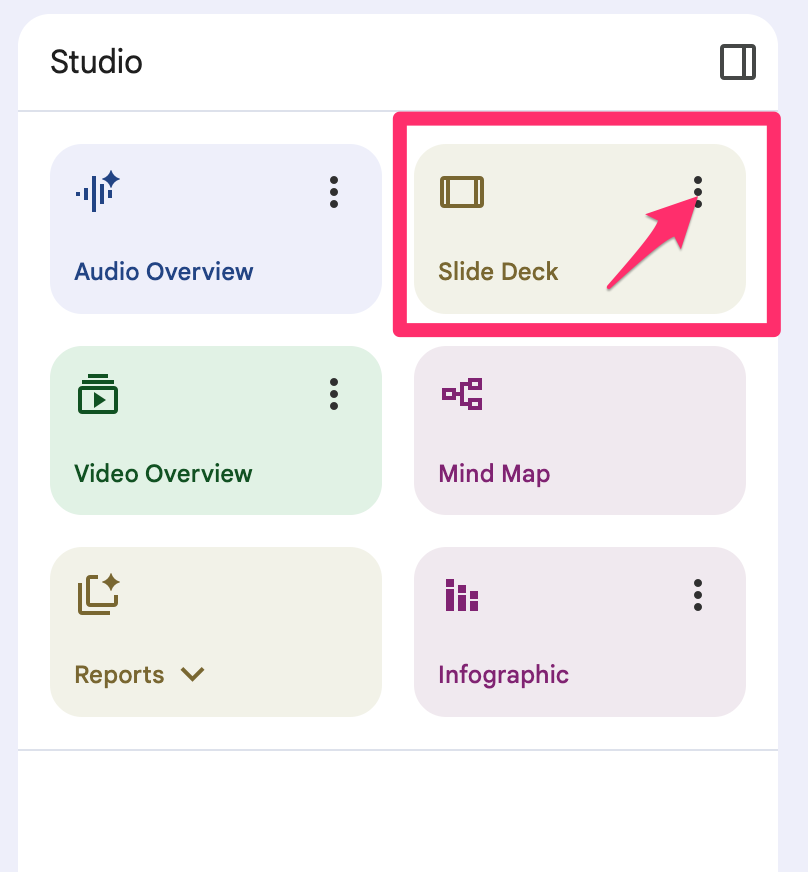
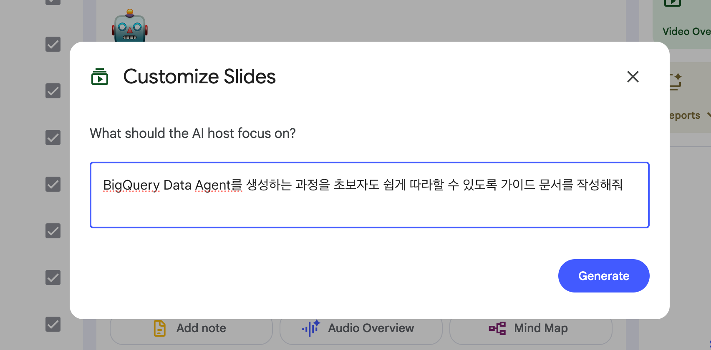

본 트랙에서는 Google Drive 및 Workspace 사내 데이터 연동(RAG)부터, 노코드 및 하이코드 방식을 활용한 자동화 워크플로우 에이전트 구축 과정을 단계별로 다룹니다.
⬇️ 방향키(↓) 또는 마우스 스크롤로 다음 슬라이드로 이동
Google Drive & Workspace 연동 RAG 개요
사내 규정, 문서, 매뉴얼을 RAG(Retrieval-Augmented Generation) 방식으로 연계하여 색인 및 검색합니다. 응답 생성 시 참조한 문서와 페이지 정보를 인용(Citation)으로 제공하여 답변의 근거를 확인합니다.
🔐 접근 권한(IAM) 동기화
사용자 본인에게 조회 권한이 부여된 Google Drive 폴더와 문서 내에서만 검색이 수행됩니다. 권한이 없는 문서는 색인 및 검색 대상에서 제외됩니다.
⚡ Drive 문서 검색
대화창에서 키워드를 입력하면, 백그라운드 색인 시스템이 관련 Drive 문서를 탐색하여 답변 생성에 참조합니다.
실습 1: 임직원 복리후생 매뉴얼 RAG
`[공통_내규] 넥스트 테크놀로지스 임직원 복리후생 가이드라인.pdf`를 Drive에 업로드하고 문서 기반 질의를 수행합니다.
📋 실습 프롬프트 실행
'넥스트 테크놀로지스 임직원 복리후생 가이드라인' 문서에서 우리 회사의 주요 복리후생 제도(의료비, 학자금, 주택자금 등)의 지원 한도와 신청 자격을 표 형태로 요약해 줘. 각 제도별로 신청 시 필요한 서류가 무엇인지도 포함해 줘.
💡 검증 포인트: 응답 하단의 인용 마커를 클릭하여 해당 내용이 기재된 PDF 페이지로 하이라이트 이동되는지 확인합니다.
실습 2: 사내 앰버서더 운영 규정 RAG
`[마케팅_캠페인] 넥스트 테크놀로지스 사내 브랜드 앰버서더 가이드라인.pdf` 문서를 대상으로 조건부 규정을 분석합니다.
📋 복합 문서 대조 프롬프트
'넥스트 테크놀로지스 사내 브랜드 앰버서더 가이드라인' 문서를 검토하고, 직원이 사내 앰버서더로 활동할 때 받을 수 있는 혜택과 준수해야 할 소셜 미디어 활동 가이드라인(금지 사항 포함)을 정리해 줘. 또한, 활동 중 발생한 예비비 정산 절차도 설명해 줘.
엔터프라이즈 NotebookLM 도서관 구성
프로젝트 및 부서 단위로 참고 문서를 모아 팀 도서관(Team Library)을 구성하는 실습입니다. LG AI 서비스 기획 초안 3종(안심 · 루미케어 · 센티넬 컴패니언)을 소스로 로드합니다.
📚 NotebookLM 문서 그라운딩
지정 소스 제한 답변: 업로드된 문서 소스(최대 50개 파일) 범위 내에서만 정보를 조합하여 환각을 최소화합니다.
온보딩 가이드 도출: 문서 기반의 FAQ, 스터디 가이드, 브리핑 문서를 자동 생성합니다.
🤝 워크스페이스 공유 협업
생성된 노트북 세션 URL을 팀 구성원에게 공유하여 동일한 레퍼런스를 바탕으로 기획안을 공동 작성합니다.
🎨 실습: AI 인포그래픽 3종 스타일 변환
LG AI 서비스 기획 초안 3종을 소스로 등록하고, 동일 소스에서 3가지 스타일의 인포그래픽을 생성합니다.
📋 인포그래픽 생성 프롬프트 3종
LG '루미케어' 공감하는 세탁 도우미 서비스의 핵심 가치와 노인 사용자 기대 효과를 한눈에 보여주는 인포그래픽을 생성해줘
LG '안심' 홈 가디언 에코시스템의 주요 구성 요소와 시니어 케어 작동 시나리오를 스케치노트(sketch-note) 스타일로 시각화해줘
LG '센티넬 컴패니언' AI 기반 노인 비상 지원 서비스 출시 소식을 신문 1면 기사 인포그래픽 스타일로 만들어줘
Audio Overview 생성: 인포그래픽 완성 후 우측 Studio 패널에서 'Audio Overview (오디오 요약)' 기능을 호출하면, 소스 내용을 영어 팟캐스트 대담 형식으로 합성하여 제공합니다.
NotebookLM 콘텐츠 자동 생성 5종
소스 문서(PDF · 텍스트 · 이미지)를 업로드하면 클릭 한 번으로 5가지 콘텐츠를 즉시 생성합니다.
🎨 Infographic
기본 · 스케치노트 · 신문 1면 3종 스타일 선택 생성
📊 Slide Deck
소스 기반 프레젠테이션 자동 생성 — Customize로 시네마틱 슬라이드까지
🎬 Video Overview
소스 내용을 영상 튜토리얼로 자동 변환 — Customize 프롬프트 지원
📖 Reports
Study guide · FAQ · Briefing doc 자동 도출
🎙️ Audio Overview
AI 진행자 2인의 팟캐스트 오디오 5~8분 자동 생성
🎨 Infographic
LG AI 서비스 기획 텍스트를 소스로 업로드하고 기본 · 스케치노트 · 신문 1면 3가지 스타일의 인포그래픽을 순서대로 생성합니다.
📥 실습 절차
LG AI 서비스 텍스트 3종을 노트북 소스로 추가
우측 Studio → Infographic (⋮) → Customize
루미케어 → 기본 스타일 인포그래픽 생성
안심 → 스케치노트 스타일 인포그래픽 생성
센티넬 → 신문 1면 스타일 인포그래픽 생성
📋 스타일별 프롬프트
LG '루미케어' 공감하는 세탁 도우미 서비스의 핵심 가치와 노인 사용자 기대 효과를 한눈에 보여주는 인포그래픽을 생성해줘
LG '안심' 홈 가디언 에코시스템의 주요 구성 요소와 시니어 케어 작동 시나리오를 스케치노트(sketch-note) 스타일로 시각화해줘
LG '센티넬 컴패니언' AI 기반 노인 비상 지원 서비스 출시 소식을 신문 1면 기사 인포그래픽 스타일로 만들어줘
📊 Slide Deck
소스 문서를 업로드하면 목차·내용·디자인이 일괄 완성된 프레젠테이션을 자동으로 생성합니다. Customize로 시네마틱 슬라이드 등 다양한 스타일을 지정할 수 있습니다.
⚙️ 생성 방법
우측 Studio 패널 → 슬라이드 항목 선택
Customize 버튼 클릭
원하는 방향을 프롬프트로 입력
생성된 슬라이드는 PPTX로 다운로드 가능
📋 프롬프트 예시
BigQuery Data Agent를 생성하는 과정을 초보자도 쉽게 따라할 수 있도록 가이드 문서를 작성해줘

Studio 패널 → Slide Deck (⋮) 클릭

Customize 프롬프트 입력 화면
🎬 Video Overview
소스 문서의 내용을 AI가 자동으로 영상 튜토리얼로 변환합니다. Customize 버튼으로 주제와 스타일을 지정할 수 있습니다.
⚙️ 생성 방법
소스 문서(PDF · 이미지) 업로드
우측 Video Overview 패널 선택
Customize 버튼 클릭
프롬프트 입력 후 생성 — MP4로 다운로드 가능
📋 프롬프트 예시
Gemini Enterprise에서 Canvas를 사용하는 방법을 초보자도 따라가기 쉽게 차근차근 설명하는 동영상을 만들어줘
📖 Reports
소스를 기반으로 Study guide · FAQ · Briefing doc 3종 문서를 자동 도출합니다. 문서 학습·질의응답·임원 보고 준비를 몇 번의 클릭으로 완성합니다.
📚 Study guide
소스 전체를 핵심 개념 → 세부 내용 순서로 자동 정리합니다. 처음 접하는 기술 문서도 빠르게 파악할 수 있습니다.
❓ FAQ
문서에서 자주 묻는 질문과 답변을 자동 추출합니다. 고객 응대·팀 온보딩 자료로 바로 활용 가능합니다.
📋 Briefing doc
핵심 내용을 경영진 보고용으로 1페이지 압축 요약합니다. 의사결정용 브리핑 문서 작성 시간을 단축합니다.
🎙️ Audio Overview
소스 문서 전체를 AI 진행자 2인의 팟캐스트 대담 형식으로 자동 요약합니다. 5~8분 분량의 오디오가 자동 생성되며 다운로드 가능합니다.
⚙️ 생성 방법
노트북 우측 오디오 개요 패널 열기
생성하기 버튼 클릭
생성 완료 후 재생 또는 다운로드
생성 소요 시간: 약 2~5분
💡 활용 팁
이동 중 이어폰으로 문서 내용 파악
팀 온보딩 오디오 자료로 배포
영어 팟캐스트 형식으로 생성됨
다운로드 후 사내 메신저·이메일로 공유
📊 Slide Deck Customize 실습
제품 이미지만으로 NotebookLM이 영화 예고편 스타일의 슬라이드를 자동 완성합니다. 라이프스타일 브랜드 '홈스타일' 시나리오로 직접 만들어봅니다.
📥 실습 절차
homestyle.zip 다운로드 후 압축 해제
새 노트북 생성 → 이미지 4장 소스 업로드 (sofa · cushion · lighting · diffuser)
브랜드 스토리 텍스트를 story 소스로 추가
슬라이드 자료 → Customize 옵션 선택 후 프롬프트 입력
📋 생성 프롬프트
스토리에 맞는 시네마틱 슬라이드를 만들어줘, 타이틀, 텍스트, 자막, 설명 등은 포함하지 마
💡 텍스트 없이 이미지만으로 구성된 영화 예고편 스타일 슬라이드 완성
📖 Reports 실습
data_agent.zip 이미지를 소스로 업로드하고 Slide Deck Customize와 Reports 3종을 직접 생성합니다.
📥 실습 절차
data_agent.zip 다운로드 후 압축 해제
새 노트북 생성 → 이미지 10개 소스 업로드
슬라이드 → Customize: 가이드 문서 생성
Reports → Study guide: 핵심 개념 정리
Reports → FAQ: 질문·답변 추출
Reports → Briefing doc: 임원 보고용 요약
📋 Customize 프롬프트
BigQuery Data Agent를 생성하는 과정을 초보자도 쉽게 따라할 수 있도록 가이드 문서를 작성해줘
🎬 Video Overview 실습
canvas.pdf와 이미지를 소스로 업로드하고 Customize 프롬프트로 단계별 튜토리얼 영상을 생성합니다.
📥 실습 절차
canvas.pdf + canvas.zip 다운로드
새 노트북 생성 → PDF와 이미지 소스 업로드
우측 Video Overview 패널 선택
Customize 버튼 클릭 후 프롬프트 입력
생성 완료 후 MP4로 다운로드
📋 Customize 프롬프트
Gemini Enterprise에서 Canvas를 사용하는 방법을 초보자도 따라가기 쉽게 차근차근 설명하는 동영상을 만들어줘
Deep Research 다단계 리서치 메커니즘
입력된 연구 주제에 대해 하위 탐색 질문을 자동 생성하고 웹 및 연결 문서를 다단계로 탐색하여 종합 문서를 도출합니다.
🔍 다단계 추론 (Multi-step Reasoning)
초기 탐색 결과에서 얻은 정보를 바탕으로 후속 검색 키워드를 파생시켜 심층 정보를 자동 탐색합니다.
📑 종합 문서 구조화
목차, 핵심 요약, 상세 분석, 인용 문헌 목록이 체계적으로 구성된 문서 포맷을 도출합니다.
실습: 리서치 기반 아이디어 확장
Deep Research를 통해 수집된 기술 동향 정보를 활용하여 신규 서비스 모델 구상을 위한 연쇄 질의를 수행합니다.
📋 후속 과제 도출 프롬프트
작성된 Deep Research 보고서의 경쟁사 기술 동향을 바탕으로, 우리 회사가 내년에 새롭게 출시할 수 있는 'AI 기반 스마트 홈 케어 구독 서비스'의 차별화 비즈니스 모델 아이디어 3가지를 구상해 줘. 각 아이디어별 예상 타겟 고객군과 초기 진입 전략도 함께 제시해 줘.
에이전트 실무 5대 아키타입 (1-3)
특정한 비즈니스 도메인 및 데이터 처리 목적에 따라 분류되는 차세대 업무 에이전트의 5대 아키타입입니다.
1️⃣ 지식 검색 (RAG)
주요 기능: 매뉴얼 및 약관 데이터 검색 적용 예시: 사내 규정 Q&A, 계약서 대조 봇
2️⃣ 데이터 분석 (Data)
주요 기능: 정형 DB 질의 및 차트 시각화 적용 예시: KPI 집계, 매출 현황 분석
3️⃣ 콘텐츠 생성 (Content)
주요 기능: 다국어 번역 및 서식 변환 적용 예시: 대외 PR 초안, 이메일 회신
에이전트 실무 5대 아키타입 (4-5) & 빌더
Agent Designer를 활용하여 프롬프트 명령어와 소스 데이터 연동만으로 업무용 커스텀 에이전트를 조립합니다.
4️⃣ 업무 자동화 (Workflow)
주요 기능: 조건부 분기 판단, API Action 쓰기 호출 적용 예시: 영업 마진 조건 심사, 티켓 발행 봇
5️⃣ 복합 조율 (Orchestrator)
주요 기능: 하위 특화 에이전트들을 통합 지휘하여 파이프라인 처리 적용 예시: 프로젝트 타당성 종합 검토 마스터
워크플로우 에이전트: 견적 승인 프로세스
B2B 영업 견적의 할인율 심사 및 결재 승인 단계를 자동화하는 워크플로우 파이프라인 실습입니다.
⚡ 단계별 분기 처리 구조
Step 1 (조건 대조): 영업 견적서의 할인율(예: 25%)이 회사 마진율 허용 범위 내에 있는지 1차 대조
Step 2 (내규 참조): 기준 초과 시, 사내 단가 매뉴얼(RAG)을 조회하여 계약 기간별 예외 허용 조건 검토
Step 3 (결재 분기): 조건 충족 시 승인 메일 도출, 기준 초과 시 재무 관리자에게 승인 사유서와 함께 결재 이관
견적 마진 최적화 실습 시나리오
조건부 할인 요청 건에 대해 내규 문서를 대조하고 분기 결과를 출력하는 워크플로우 테스트 프롬프트입니다.
📋 실습 지시 프롬프트
너는 B2B 영업 마진 심사 워크플로우 에이전트야. 이번 거래는 '대기업 A사 3년 계약' 건으로 영업사원이 28%의 특별 할인을 요청했어. 사내 판가 내규 문서(RAG)를 조회하여 3년 장기 계약 시 허용되는 최대 할인율(25%)과 비교하고, 초과분(3%)에 대한 예외 승인 사유서 초안과 함께 재무팀 결재 요청 파이프라인을 시뮬레이션해 줘.
하이코드 개발: ADK & CAA 아키텍처
노코드 환경을 넘어, 프로그래밍 방식으로 대규모 에이전트 시스템을 구축하는 공식 개발 도구 및 아키텍처입니다.
🛠️ Google ADK (Python / TS)
도구 호출(Tool Calling), 세션 상태 관리, 외부 시스템 콜백을 코드 단에서 유연하게 제어하는 소프트웨어 개발 키트입니다.
☁️ Cloud Agent Architecture (CAA)
Cloud Run, BigQuery, Vertex AI, Eventarc 등 GCP 인프라와 결합하여 대용량 트래픽을 처리하는 에이전트 파이프라인 구성 방안입니다.
Track 2 슬라이드 완료
Track 2 심화 안내를 마쳤습니다. 다음 단계인 Part 3 (Admin Guide) 슬라이드로 이동하여 인프라 거버넌스 및 보안 체계를 확인합니다.